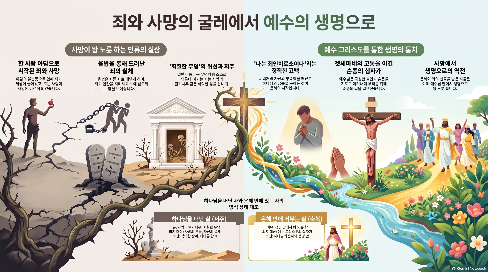

죄와 사망
죄는 한 사람 아담을 통해 세상에 들어왔고, 그로 인해 사망이 모든 사람에게 이르렀습니다(롬 5:12). 하나님은 가인에게 처음으로 "죄"라는 말을 쓰시며 죄가 문 앞에 엎드려 그를 삼키려 한다고 경고하셨는데(창 4:7), 이는 율법이 있기 전에도 죄에 대한 책임이 있었음을 보여줍니다(롬 5:13). 아담에게 처음 사망을 경고하신 하나님(창 2:17)의 말씀대로, 죄로 인해 사망이 왕처럼 우리를 지배해왔습니다. 그러나 은혜와 의의 선물을 받은 자들은 예수 그리스도 안에서 오히려 생명 안에서 왕 노릇 하게 됩니다(롬 5:17). 이 은혜는 자신이 죄인임을 아는 자에게만 열립니다. 세리는 "하나님이여 불쌍히 여기소서 나는 죄인이로소이다"(눅 18:13)라고 고백했지만, 바리새인들은 회칠한 무덤처럼 겉은 깨끗해 보여도 속으로는 스스로를 의롭다 여기며 죄인 됨을 인정하지 않았습니다(마 23:27). 사람의 도움이나 자신의 힘을 의지하는 자는 사막의 떨기나무처럼 삭막한 삶을 살 뿐입니다(렘 17:5-6). 겟세마네에서 예수님은 극심한 불안과 슬픔 가운데서도(마 26:37-38) 기도로 이겨내시며 우리를 위해 죽음의 길을 순종으로 걸으셨습니다. 우리가 회칠한 무덤 같은 자기 기만에서 벗어나 스스로 죄인임을 인정할 때, 비로소 그 은혜가 우리 삶에 임하게 됩니다.

못 — 단단한 곳에 박힌 축복
이사야 22장은 앗수르 왕 산헤립의 침공 앞에서, 자신의 지위를 이용해 사욕을 채우다 하나님께 저주의 심판을 받고 쫓겨난 왕궁 맡은 자 셉나와, 그 자리를 대신 받은 엘리아김을 대조해서 보여줍니다. 하나님은 성경에서 아무에게나 "내 종"이라 부르지 않으십니다. 자기 집을 떠나 믿음의 조상이 된 아브라함, 광야 40년을 인내로 이끈 모세, 홀로 믿음을 지킨 갈렙, 고난 중에도 하나님을 의지한 다윗, 사탄 앞에서도 하나님이 자랑하신 욥, 수치를 감수하고 순종한 이사야, 성전 재건에 헌신해 인장으로 삼으신 스룹바벨, 심판의 도구로 쓰신 이방 왕 느부갓네살까지 — 성경 전체에서 단 아홉 명뿐인 이 호칭에, 유명하지도 않고 몇 구절밖에 소개되지 않는 엘리아김도 당당히 포함됩니다. 하나님은 그의 신실함을 아시고 "단단한 곳에 박힌 못"처럼 견고히 세우시며 그 가문 전체에 영광이 걸리는 축복을 주셨습니다. 이 못은 다윗의 집의 열쇠, 곧 장차 오실 예수 그리스도를 예표하는 무형의 축복과 함께 주어진 유형의 축복이었습니다. 다만 본문은 동시에 그 못이 삭아 부러지고 거기 걸린 가문의 영광이 함께 무너질 수도 있다는 경고도 담고 있어, 요한계시록이 에베소 교회에 촛대를 옮기겠다고 경고하신 것과 같은 맥락으로, "내 종"이라 불렸던 사람도 완전하지 않으며 끝까지 하나님을 붙잡아야 함을 일깨웁니다. 우리는 비록 유명한 사람이 아니지만, 엘리아김처럼 신실하게 하나님을 섬기며 그분의 인정을 받는 것, 그것이 우리의 목표가 되어야 한다는 말씀으로 마칩니다.